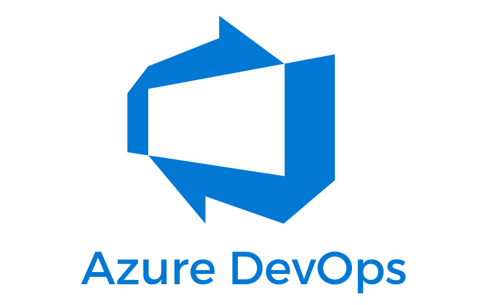

Configure Jira Instance
Base Url:
Project Key:
Token:
How to create an API token?
Configure
Configure Azure Devops Instance

Base Url:
Organization:
Project:
Token:
How to create an API Token?
Configure
Migrate